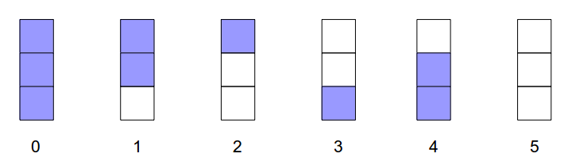
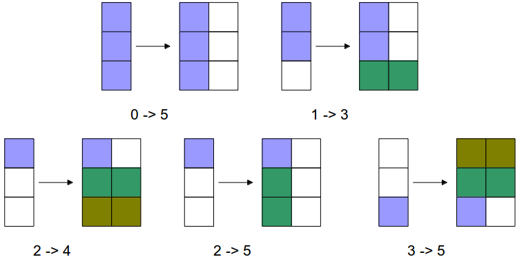

1121 Tri Tiling 解题思路

状态转移：


chyx111@qq.com
给出N和M，问有多少个长度为N的序列，使得每个数的范围都在[1,M]之间， 并且序列中每一个数至少是前一个数的两倍
动态规划
\(dp[i][j]\)表示考虑前i位且第i位为j的方案
\[ dp[i][j] = \sum_{1 \le k \le \frac{j}{2}} dp[i-1][k] \]
先枚举位数i，再枚举最后一个数j，最后统计k
时间复杂度\(O(N \times M \times M)\)
for (int j = 1; j <= 2000; ++j) {
dp[1][j] = 1;
}
for (int i = 2; i <= 10; ++i) {
for (int j = 1;j <= 2000; ++j) {
dp[i][j] = 0;
for (int k = 1; k * 2 <= j; ++k) {
dp[i][j] += dp[i -1 ][k];
}
}
}用\(1 \times 2\)的长方形铺满\(3 \times n\)的长方形，有多少种方法
状态转移：
初始第0列是状态0，终止第n+1列是状态5
dp[0][0]=1;
for (int i = 1; i <= n + 1; ++i) {
dp[i][5] += dp[i - 1][0];
dp[i][3] += dp[i - 1][1];
dp[i][4] += dp[i - 1][2];
dp[i][5] += dp[i - 1][2];
dp[i][1] += dp[i - 1][3];
dp[i][5] += dp[i - 1][3];
dp[i][2] += dp[i - 1][4];
dp[i][3] += dp[i - 1][5];
dp[i][2] += dp[i - 1][5];
dp[i][0] += dp[i - 1][5];
}在一次赛车比赛中，在检查点换轮胎需要花费一定时间\(b\)，而速度与离上一次换轮胎的路程相关， 行走越远，速度越低
问从起点到终点的最少时间
先求出两次换轮胎的地点之前行驶所需要的时间
for(int i = 0; i < n; ++i){
int position = stop[i];
cost[i][i] = 0;
for (int k = i; k <= n; ++k) {
if (k > i) cost[i][k] = cost[i][k - 1];
for (; position < stop[k]; ++position) {
if (position - stop[i] >= r) {
cost[i][k] += 1 / (v - e * (position - stop[i] - r));
} else {
cost[i][k] += 1 / (v - f * (r - position + stop[i]));
}
}
}
}\(dp[i][j]\) 表示到达第i个换轮胎点，上一次换轮胎位置是j时的消耗值
初始状态有\(dp[1][0], dp[1][1]\)
答案为\(dp[n][n] - b\)（假设在最后一个位置换轮胎，但这一次换轮胎是没必要的）
dp[1][0] = cost[0][1];
dp[1][1] = dp[1][0] + b;
for (int i = 2; i <= n; ++i) {
for (int k = 0; k < i; ++k) {
dp[i][k] = dp[i - 1][k] + cost[k][i] - cost[k][i - 1];
}
dp[i][i] = dp[i][0];
for (int k = 0; k < i; ++k){
dp[i][i] = min(dp[i][k], dp[i][i]);
}
dp[i][i] += b;
}给出两个集合\(S_1\)，\(S_2\)
在\(S_2\)中选出一些不重复的数与\(S_1\)每个数匹配，使得匹配的数的差的绝对值尽量小
集合中数的个数不超过500
首先证明，在\(S_1\)中取两个数\(a_1\),\(b_1\)，在\(S_2\)中取两个数\(a_2\),\(b_2\)
若\(a_1<b_1\),\(a_2<b_2\)，则\(|a_1-a_2|+|b_1-b_2|<|a_1-b_2|+|a_2-b_1|\)
所以匹配的时候，先假定\(S_1\)中的数字已经排序，那么可以知道，\(S_2\)中的数字也是必须排好序的。
\(dp[i][j]\)表示\(S_1\)中前i个数与\(S_2\)中前j个数匹配时，第i个数以及之前的匹配数值差的绝对值之和
sort(s1, s1 + n);
sort(s2, s2 + m);
dp[0][0] = abs(s1[0] - s2[0]);
for (int i = 1; i < m; ++i) {
dp[0][i] = min(dp[0][i - 1], abs(s1[0] - s2[i]));
}
for (int i = 1; i < n; ++i) {
dp[i][i] = dp[i - 1][i - 1] + abs(s1[i] - s2[i]);
for (int j = i + 1; j < m; ++j) {
dp[i][j] = min(dp[i][j - 1], dp[i - 1][j - 1] + abs(s1[i] - s2[j]));
}
}用\(1 \times 2\)的长方形铺满\(4 \times N\)的长方形，有多少种方法
和1121一样，找出不同的缺口
用0表示缺口无方块，1表示有
0:0000 1:0011 2:1100 3:1001 4:0110 5:1111
状态转移：0->1, 0->2, 0->3, 0->5, 1->2, 1->0, 2->1, 2->0, 3->0, 3->4, 4->3, 5->0, 0->0
dp[0][0]=1;
for (int i = 1; i <= n + 1; ++i) {
dp[i][0] += dp[i - 1][0];
dp[i][1] += dp[i - 1][0];
dp[i][2] += dp[i - 1][0];
dp[i][3] += dp[i - 1][0];
dp[i][5] += dp[i - 1][0];
dp[i][2] += dp[i - 1][1];
dp[i][0] += dp[i - 1][1];
dp[i][1] += dp[i - 1][2];
dp[i][0] += dp[i - 1][2];
dp[i][0] += dp[i - 1][3];
dp[i][4] += dp[i - 1][3];
dp[i][3] += dp[i - 1][4];
dp[i][0] += dp[i - 1][5];
}桥的起点为0，终点为L，其中地有M个石子
青蛙每次跳的范围为[S,T]，问要跳过桥最小踩到石子次数
\(1 \le L \le 10^9\)
\(1 \le S \le T \le 10\)
\(1 \le M \le 100\)
L的值大太，直接按L的值进行动态规划不可行
分情况：若S和T相等，则踩到的石子数是固定的
若S和T不相等，因为S和T的最大值为10，所以当两个石子相差太远是没有意义的，
这里取的值为100，当石子距离相差100以上时，看作100，答案不变。
压缩后桥长度不超过10000，直接动态规划即可
for (int i = 0; i < m; ++i) {
delta[i] = rock[i + 1] - rock[i];
if (delta[i] > 100) {
delta[i] = 100;
}
}
for (int i = 1; i <= m; ++i) {
rock[i] = rock[i - 1] + delta[i - 1];
}
for (int i = 1; i <= m; ++i) {
dp[rock[i]] = 1;
}
can_reach[0] = 1;
L = rock[m] + 100;
for (int i = s; i <= L; ++i) {
min_touched = 101;
for (int j = i - t; j <= i - s; ++j) {
if (j >= 0) {
if (can_reach[j] && dp[j] + dp[i] < max) {
min_touched = dp[j] + dp[i];
can_reach[i] = 1;
}
}
}
dp[i] = min_touched;
}有一个人要从起点开始经过所有目的地再回到起点
他只能从起点（最左端的点），向右一直到达最右端的点，再返回起点，在这一次往返要经过所有的点
求最短路程
一次往返可以看作从最左端点到最右端点的两条独立路径
对所有点按从左到右排序后，用\(dp[i][j]\)表示两条路径现在分别在i和j点。
dp[1][0] = dist[1][0];
for (int i = 2; i < n; ++i) {
dp[i][0] = dp[i - 1][0] + dist[i][i - 1];
}
for (int j = 1; j < n; ++j) {
dp[j + 1][j] = dp[j][0] + dist[0][j+1];
for (int i = 1; i < j; ++i) {
dp[j + 1][j] = min(dp[j + 1][j], dp[j][i] + dist[i][j + 1]);
}
for (int i = j + 2; i < n; ++i) {
dp[i][j] = dp[i - 1][j] + dist[i][i - 1];
}
}给出一串项链，每次可以选相邻两个珠子进行聚合，释放出一定的能量，并产生一个新珠子
项链是头尾相接的
求释放的能量的总和的最大值
项链长度不超过100
设N=4，4颗珠子的头标记与尾标记依次为(2，3) (3，5) (5，10) (10，2)
我们用记号⊕表示两颗珠子的聚合操作，(j⊕ k)表示第j，k两颗珠子聚合后所释放的能量
则第4、1两颗珠子聚合后释放的能量为：
(4⊕ 1)=10 * 2 * 3=60。
这一串项链可以得到最优值的一个聚合顺序所释放的总能量为
((4⊕ 1)⊕ 2)⊕ 3）= 10 * 2 * 3 + 10 * 3 * 5+10 * 5 * 10 = 710
每次聚合，都会使数字中一的个数字消失
动态规划
状态为[i,j]表示从i开始，按顺时针方向到j，这一段珠子所聚合得到的能量最大值
状态转移：要求出[i,j]的值，则存在一个k在i和j之间， [i,j]的值为[i,k]的值与[k+1,j]的值与这次聚合所释放出的能量的总和，取最大值
长度较大的区间需要长度较小的区间得到，因此枚举顺序为区间的长度从小到大
for (int step = 1; step < n; ++step) {
for (int i = 0; i < n * 2; ++i) {
int j = i + step;
if (j >= n * 2) break;
for (int k = i; k < j; ++k) {
int better = dp[i][k] + dp[k + 1][j] + weight[i] * weight[k + 1] * weight[j + 1];
dp[i][j] = max(dp[i][j], better);
}
}
}n个数的排列，可以在中间插入小于号和大于号，如1 3 5 4 2 变成 1<3<5>4>2
现在问n个数其中有k个小于号的排列有多少个
\(n, k \le 100\)
用\(dp[i][j]\)表示i个数的排列有j个小于号，现在要扩展到i+1个数的排列，即插入一个数要大于当前所有数
当这个数插入位置为序列头或小于号中间时，排列比原来多出一个大于号
当这个数插入位置为序列尾或大于号中间时，排列比原来多出一个小于号
for (int i = 1; i < 100; ++i) {
for (int j = 0; j < i; ++j) {
dp[i + 1][j] += dp[i][j] * (j + 1);
dp[i + 1][j] %= 2007;
dp[i + 1][j + 1] += dp[i][j] * (i - j);
dp[i + 1][j + 1] % =2007;
}
}